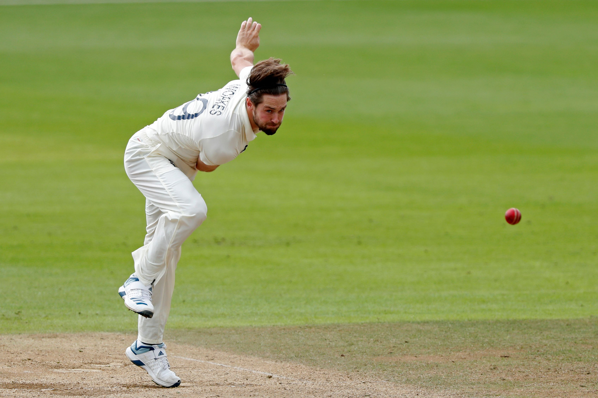
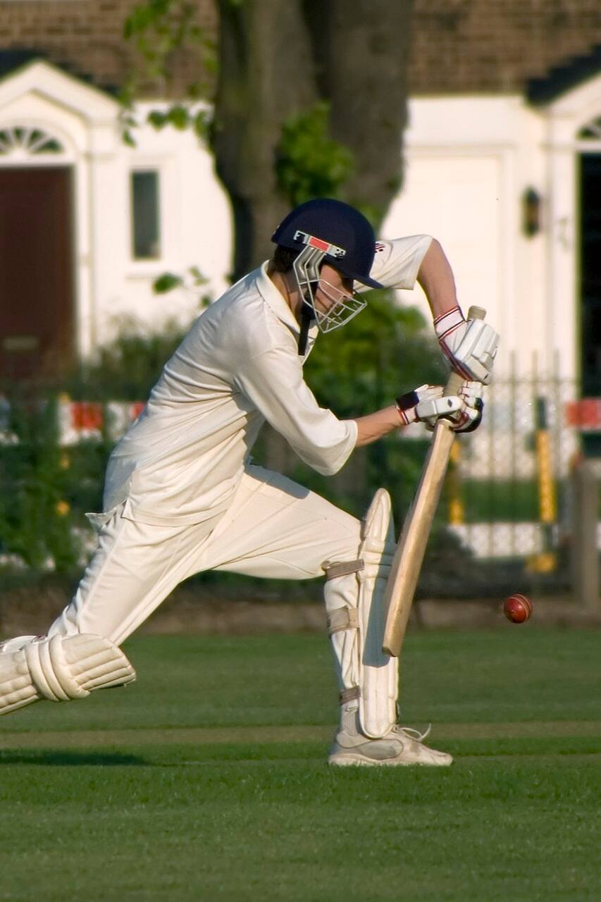
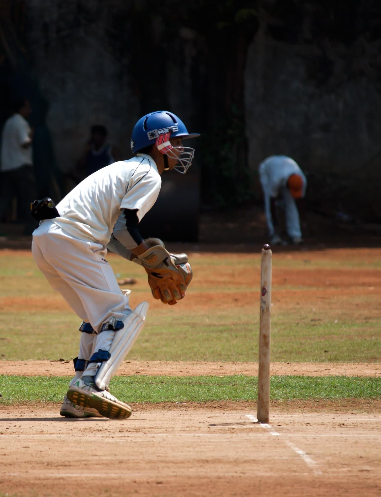

Physical Fitness: Cricket demands players to be in good physical shape. Endurance, agility, and strength are essential to excel in various aspects of the game, such as batting, bowling, and fielding.
Batting Skills: Batsmen need precise hand-eye coordination, footwork, and timing to effectively hit the ball. Different formats of the game (Test, ODI, T20) require different strategies and shot selections.
Bowling Skills: Bowlers need a diverse set of skills, such as pace, swing, spin, and accuracy. Developing variations and mastering control over the ball are crucial to outsmarting batsmen.
Fielding Abilities: Fielders contribute to the team's success by preventing runs and taking catches. Quick reflexes, sharp throwing, and agility are vital for effective fielding.
Game Understanding: A deep understanding of cricket's intricacies, strategies, and tactics is essential. Players must be able to read the game situation, anticipate opponents' moves, and make quick decisions.
Teamwork and Communication: Cricket is a team sport that requires seamless communication among players. Effective teamwork, both on the field and off it, contributes to a successful outcome.
Adaptability: Players need to adapt to various conditions, such as pitch type, weather, and opposition strength. Flexibility in approach enhances a player's effectiveness.
Respect for Rules and Sportsmanship: Adhering to the rules and upholding sportsmanship are paramount. Players must respect the spirit of the game, opponents, and officials.
Mental Toughness: Cricket is mentally challenging, requiring players to handle pressure, setbacks, and long hours on the field. Maintaining focus and staying composed are crucial traits.
Continuous Improvement: Cricket demands a commitment to constant improvement. Players must refine their skills, adapt to changing trends, and learn from experiences.
Dedication and Practice: Hours of practice are essential to master cricket's nuances. Players hone their skills through regular training, net sessions, and match simulations.
Professionalism: As the game has evolved, professionalism has become vital. Commitment to fitness regimes, following team protocols, and managing time effectively are key aspects.